Cinematic 3D experiences merging interactive narrative, cinematography and visual storytelling, with a focus on Unreal Engine and realtime workflows.
01 Project
SOMEONE ELSE’S BUSINESS
Interactive Cinema Prototype / Unreal Engine 5
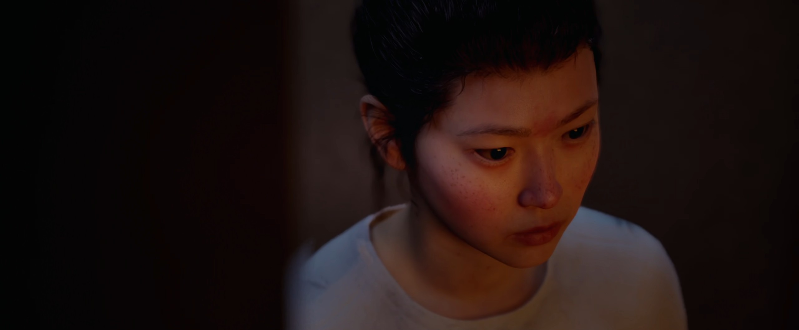
SOMEONE ELSE’S BUSINESS is an Unreal Engine 5 interactive cinema prototype that reimagines an original short film, written and directed by Suji Park, as a voice-driven new media narrative experience. Built as a playable vertical slice for a psychological thriller, the project combines spatial investigation, cinematic presentation, AI-assisted dialogue, STT/TTS voice interaction and real-time emotional-state-driven camera, lighting, cinematic staging and ending direction into one continuous realtime experience.
Project Scope
Developed independently from the original film concept to the final playable prototype, translating the writing and directing work into an interactive realtime format.
Narrative DesignCinematic DirectionUE5 Scene FlowBlueprint ImplementationVoice InteractionDialogue SystemUI DesignLightingCamera Work
Project Highlights
Original short film reimagined as an interactive new media narrative
Playable vertical slice of a voice-driven psychological thriller
Spatial investigation through inspectable objects and in-world memory playback
AI-assisted character dialogue with STT/TTS interaction
Camera, lighting, cinematic staging and ending direction evolving in real time with the character’s emotional state
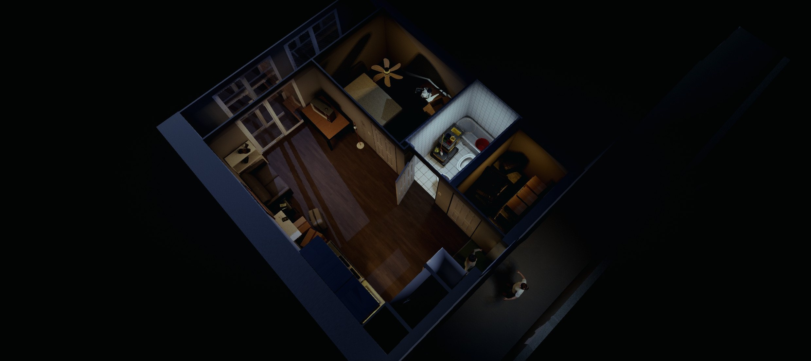
Visual Identity
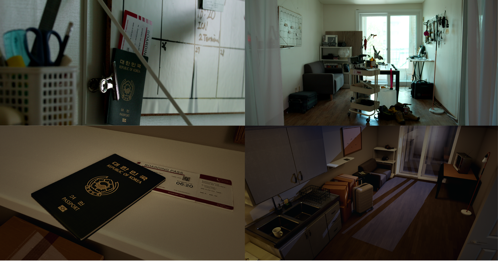
Environment Design
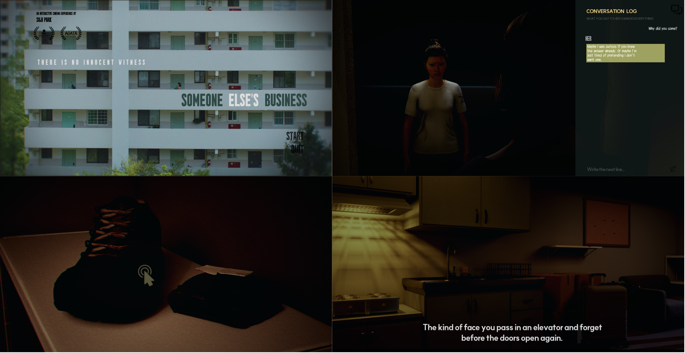
Cinematic UI
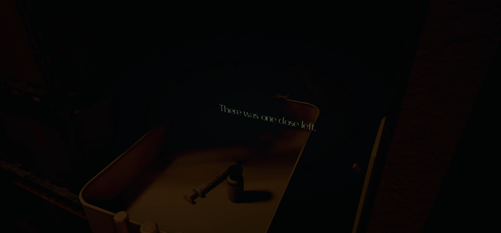
Inspect Phase
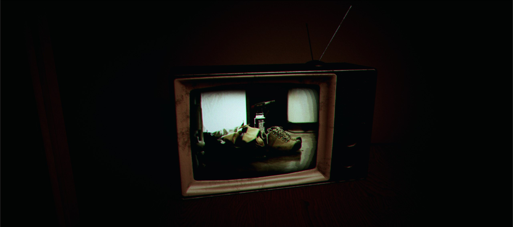
In-World Memory Playback
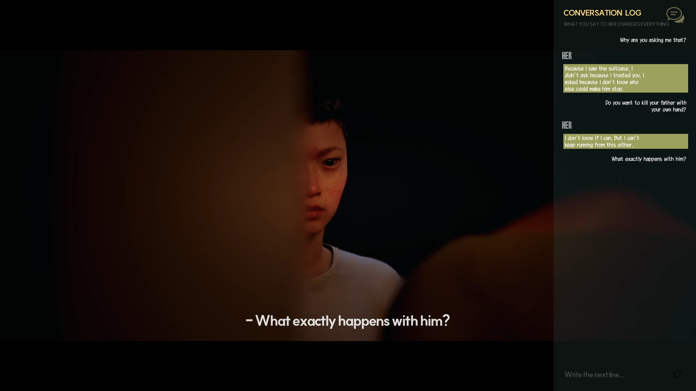
Dialogue Scene
Tools Unreal Engine 5, Blueprint, Sequencer, VaRest, OpenAI API, STT/TTS, Premiere Pro and Photoshop
02 Process
Process
A breakdown of SOMEONE ELSE’S BUSINESS, showing how filmed footage, Unreal environments, spatial investigation, voice interaction, AI-assisted dialogue and route-based endings were connected into one cinematic flow.
Narrative Flow
Actual chronology and player chronology are separated, allowing the player to reconstruct a hidden week of investigation before entering the dialogue scene.
Actual chronology vs player chronology
Cinematic Presentation
The opening combines filmed footage and in-engine Sequencer cinematics before transitioning into playable investigation. Letterbox framing, subtitles, fade timing and title cards keep the experience close to cinema while moving the player into control.
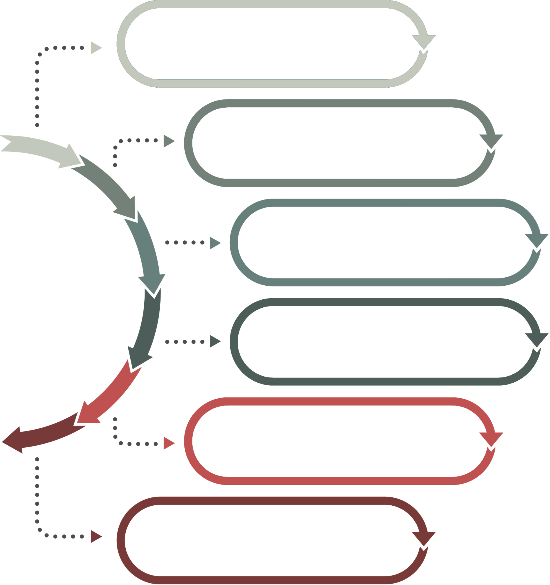
Opening to playable transition
Interaction Design
The Inspect phase uses a simple loop: look around, find an item, click, read or watch, then update understanding. Core items drive progression, while ambient items deepen atmosphere without blocking the main flow.
Memory footage is presented inside the world through the old TV screen rather than as a flat UI window, keeping discovery tied to physical movement and cinematic viewing.
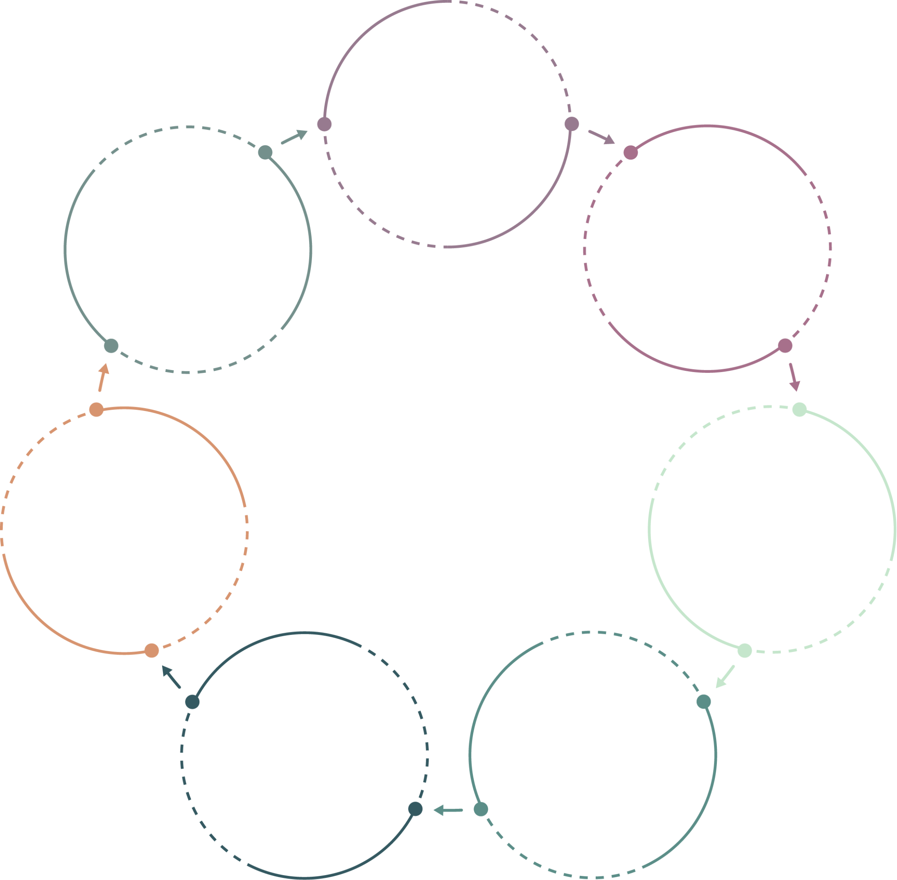
Inspect interaction loop
Dialogue System
The dialogue system supports voice or text input, AI-assisted character response and TTS playback through a structured interaction loop.
During the dialogue scene, the character’s emotional state updates in real time, influencing camera, lighting, cinematic tone and ending direction as the conversation unfolds.
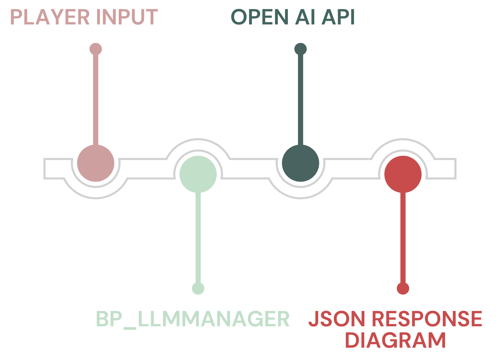
AI Dialogue and Runtime Context
03 Cinematics
Cinematics
A selection of cinematic 3D work exploring atmosphere, composition, lighting and visual storytelling across realtime, rendered and composited projects.
A short reel highlighting selected work in Unreal Engine, Maya, V-Ray, Substance Painter and Nuke, with a focus on cinematic environments, lighting, lookdev and CG integration.
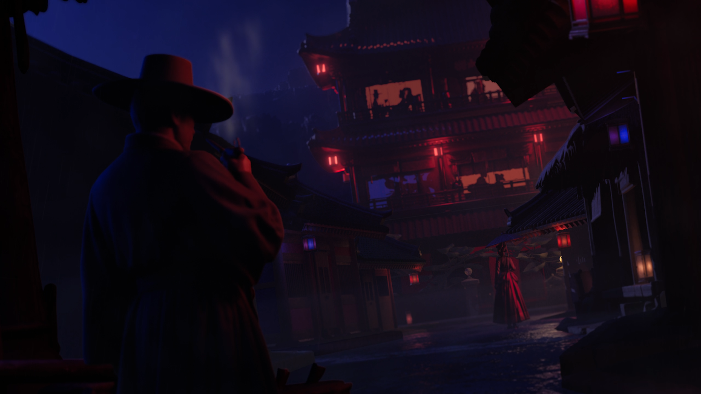
Joseon Noir
Maya / V-Ray cinematic environment, lookdev and final comp
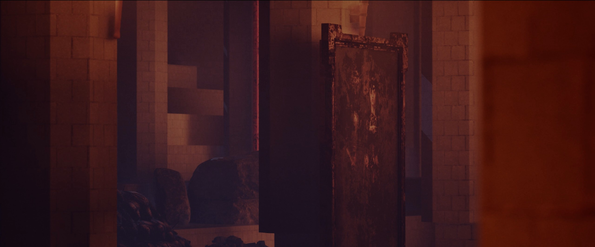
Crown of Ashes
Unreal Engine 5 environment, lighting and cinematic presentation
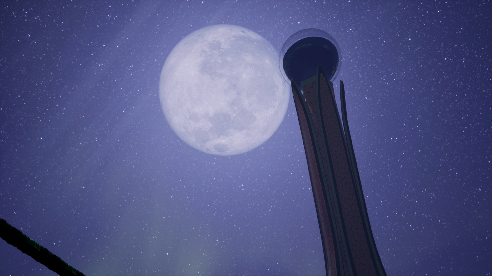
Greener Corporation
Unreal Engine 5 worldbuilding, environment and cinematic presentation
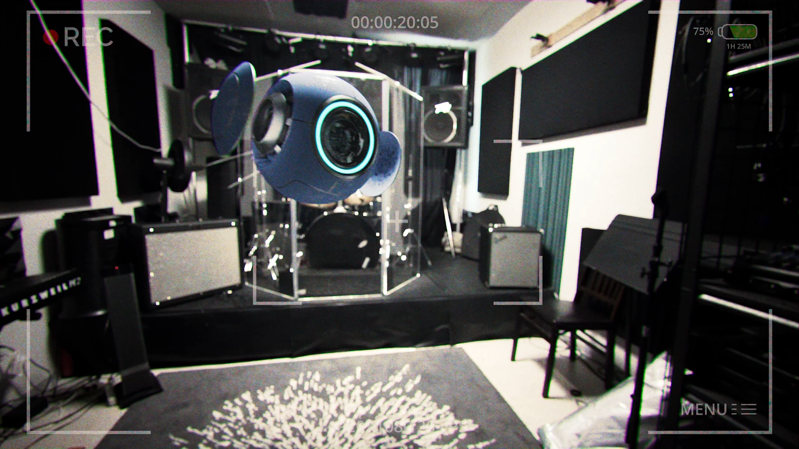
Robot: The Intruder
CG integration, roto, color match and final compositing in Nuke
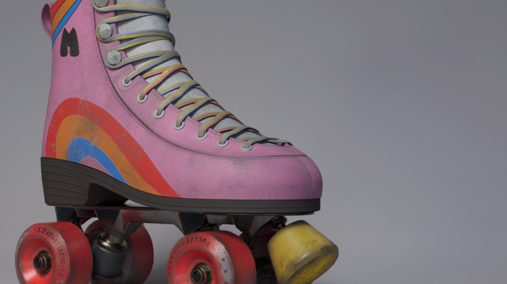
Roller Skate
Material, texturing and lookdev study with Maya, V-Ray and Substance Painter
04 About
About / Contact
I am a 3D generalist developing cinematic experiences across realtime and rendered 3D workflows, with a focus on interactive narrative, cinematography and Unreal Engine-based visual storytelling.
Drawing on a background in filmmaking and industry experience, I approach realtime 3D as a cinematic medium where space, interaction and narrative systems can become one continuous experience.
Tools
Unreal Engine 5, Sequencer, Blueprint, Maya, Blender, Substance Painter, Photoshop and Premiere Pro